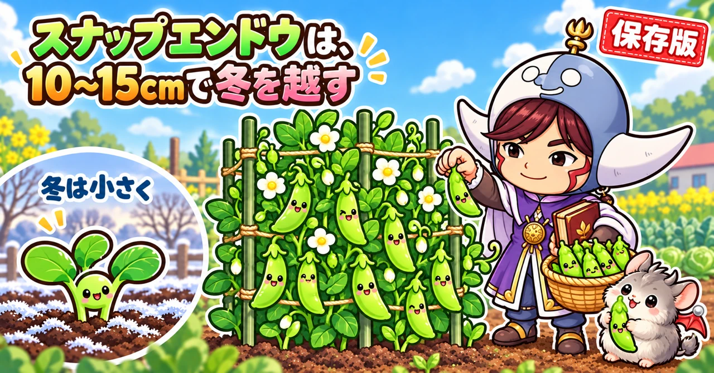

スナップエンドウの育て方｜つるあり・なし、まき時、冬越し、間引き、支柱、収穫

📖 この記事の目次
この記事で分かること
- スナップエンドウは、秋にタネをまいて小さな株で冬を越させ、4〜5月に収穫する野菜です。
- つるありとつるなしがあります。初めてなら、背が低く管理が楽なつるなしがおすすめです。
- タネまきは、一般的な地域で10月中旬〜11月。関東では11月の前半から中旬にまく、という説明が多くありました。
- 冬は草丈10〜15cmで迎えるのが理想です。大きすぎても、小さすぎても、冬に傷みます。
- 酸性の土にとても弱いので、石灰は欠かせません。元肥はほとんど要りません。
- 間引きは、冬を越してから。1つの穴に2本にします。
- 春は一気に伸びるので、2月中旬ごろから支柱を立てて支えます。
- 収穫は、さやの中の豆がふくらんでから。こまめに穫るほど、長く収穫が続きます。
スナップエンドウは、さやごと食べられて甘く、さくさくした歯ごたえが楽しい、家庭菜園で人気の野菜です。次々に穫れるので、子どもといっしょに収穫するのにも向いています。もぎたては特に香りがよく、家庭菜園ならではの味を楽しめます。
一方で、「冬を越せずに枯れた」「芽が出なかった」「春に茂りすぎて病気になった」という声もよく聞きます。スナップエンドウは、秋から春まで、季節ごとに気をつけることがはっきりしている野菜です。この記事では、タネまきから収穫まで、順番に書いていきます。話す人によって考え方が分かれるところは、両方の考え方を並べておきます。
早見：スナップエンドウの基本
時期の目安（一般的な地域）
- タネまき：10月中旬〜11月（関東では11月前半〜中旬という説明が多い）
- 植えつけ：ポットでまいてから約30日、本葉3〜4枚のころ
- 冬越し：草丈10〜15cmで冬に入る。土寄せと防寒
- 間引き：冬を越してから。2月中旬〜3月ごろに1つの穴に2本
- 支柱：2月中旬ごろから
- 収穫：4月〜5月中旬ごろ
数字の目安
- 株間：30cmほど
- 草丈：つるなしで80cm〜1mほど、つるありで2m近く
- 芽が出るまで：1週間〜10日ほど

スナップエンドウという野菜
えんどうには3つの食べ方がある
えんどうは、食べ方によって大きく3つに分けられます。
- さやえんどう（きぬさや）：若い薄いさやを食べる
- スナップエンドウ：さやの中の豆をふくらませて、さやごと食べる
- 実えんどう：さやの中の豆だけを食べる
スナップエンドウは、甘くてみずみずしく、家庭菜園で特に人気があります。「スナックエンドウ」という名前もよく聞きますが、これはタネの会社の商品名で、正式にはスナップエンドウと呼ぶ、と説明されていました。
寒さに当たって、春に花をつける
スナップエンドウは、秋にまいて冬を越させ、春に収穫する野菜です。冬の寒さに当たることで、春に花をたくさんつけるようになります。
寒さには比較的強い野菜ですが、冬が来る前に大きく育ちすぎると、寒さに弱くなります。逆に、小さすぎるまま冬に入ると、春のスタートが遅れて、収穫量が減ってしまいます。「ちょうどいい大きさで冬を迎える」ことが、スナップエンドウづくりの最大のこつです。
品種の選び方
つるありとつるなし
スナップエンドウには、つるが長く伸びる「つるあり」と、背が低い「つるなし」があります。
- つるあり：背丈が2m近くになる。収穫量が多く、長く収穫を楽しめる。ただし、やぐらを組んでネットを張るなど準備に手間がかかり、場所も広く使う
- つるなし：背丈は1m前後。収穫量はややひかえめだが、家庭で食べるには十分。管理が楽で、プランターでも育てられる
初めての方や、手軽に育てたい方には、つるなしがすすめられていました。タネを買うときは、袋につるありか、つるなしかが書かれているので、よく確かめてから選びます。
動画で名前が挙がっていた品種
- つるありスナック：甘く、食感がよく、育てやすくて収穫量も多いとされる
- スナップエンドウ グルメ：さやが肉厚で大きく、10cmほどになるとされる
- つるなしスナック2号：品質のよい実が穫れ、プランターにも向く。終盤にかかりやすいうどんこ病に強いとされる
- ホルン：つるなしで、寒さに強く、育ちが早いとされる
植える場所と土
同じ場所に続けて植えない
えんどうは、同じ場所で続けて育てるのを嫌います。豆の仲間を育てたあとは、3〜4年あけるようにします。
酸性の土に、特に弱い
えんどうは、豆の仲間の中でも特に酸性の土に弱い野菜です。うね全体に石灰をまいて、土の酸っぱさを調整しておきます。貝殻を原料にした石灰なら、まいてすぐに植えられます。植え穴にも、石灰をひとつまみ入れておく、という念の入れ方も紹介されていました。
湿気に弱いので、水はけよく
えんどうは湿気に弱く、水はけの悪い場所では根が腐ってしまうことがあります。うどんこ病などの病気も出やすくなります。水はけのよい場所を選び、うねの高さは15cmほどにしておくとよい、と説明されていました。
元肥は、ほとんど入れない
元肥を入れてスタートすると、秋のうちに大きく育ちすぎて、冬を越しにくくなります。元肥は入れず、石灰だけで始める、という説明が多くありました。窒素を入れずに始めて、肥料は春から効かせる、という考え方です。
豆の仲間は、根に住む菌の働きで、空気中の窒素を取りこめます。だから、肥料が少ない土でも育ちます。この菌がよく働けるように、落ち葉や野菜くずなど、有機物の入った土に植えるのがよい、と説明されていました。
何の後に植えるか
ほかの野菜で肥料を使ったあとの場所は、スナップエンドウに向いています。トマトのあとにスナップエンドウを育てている例もありました。
マルチを張ると育ちがよい
マルチを張ると、土の温度が上がって育ちがよくなり、雑草も抑えられます。マルチがなくても育てられます。
タネまき
まく時期
一般的な地域では、10月中旬から11月にかけてまきます。関東では、11月の前半から中旬がよい、という説明が多くありました。
ただし、最近は秋の暑さが長引くので、少し遅めにまくほうがよいかもしれない、とも話されていました。早くまきすぎると、冬になる前に大きく育ちすぎてしまいます。天気予報を見ながら、まく時期を決めます。
タネが芽を出しやすい温度は18〜20℃ほどとされています。寒さにも強く、10℃くらいでも、日数はかかりますが芽が出るそうです。
直まきとポットまき
畑に直接まく方法と、ポットで苗を育てる方法があります。
- 直まき：1つの穴に4粒ほどまく。最終的には2本に間引く
- ポットまき：9cmのポットに3粒ほどまく。約30日、本葉3〜4枚まで育てて植える
ポットで育てておくと、芽が出なかったときや、畑の苗が大きくなりすぎたときの予備になります。直まきする場合も、予備の苗をポットで作っておくと安心です。
まき方の4つのこつ
タネまきで失敗しないためのこつとして、次の4つが挙げられていました。
- 深くまきすぎない：指の第一関節くらいの深さが目安
- まきすぎない：1つの穴に入れる数を守る
- 押さえる力を足りなくしない：まいたら、土をしっかり押さえる
- 水をやりすぎない：えんどうは湿気に弱い
ポットまきの手順
- 9cmのポットに、タネまき用の土を8割ほど入れる
- 指の第一関節くらいの深さの穴を3つあけ、1粒ずつ入れる
- 土をかけて、軽く押さえる
- 水をやる
- 雨の当たらない軒下や玄関先に置く
ビニールハウスに置く場合は、換気をして、温度が上がりすぎないようにします。
タネの色に驚かない
買ってきたタネが、青や赤に色づいていることがあります。消毒のための薬が付いていたり、間違って食べないように色が付けてあったりするためです。
芽が出ないとき
10日たっても出なければ、掘って確かめる
スナップエンドウは、まいてから1週間〜10日ほどで芽が出ます。10日ほどたっても芽が出なければ、土の中でタネが腐っているか、鳥に持っていかれたかのどちらかだと考えられます。
土をそっと掘って、タネの様子を確かめます。細い根と、上向きの芽が出ていれば、もうすぐ地上に出てくるので待ちます。腐っていたら、すぐにまき直します。
遅くまき直すなら、保温する
11月中旬を過ぎてからまき直す場合は、防虫ネットやビニールで覆って温め、芽が出るのを助けます。遅くまいた苗は小さいまま冬に入りやすく、寒さに当たって傷みやすいからです。
苗を買う手もある
まき直しが難しいときは、ホームセンターなどで苗を買って植えます。選ぶのは、高さ10cm以内で、節と節のあいだが詰まった苗です。大きくなりすぎた苗は、枝分かれが増えて寒さに当たりやすく、冬に傷みやすいと説明されていました。

植えつけ
植えつけの手順
- 植え穴に石灰をひとつまみ入れ、土を少し戻す
- 苗に水をやっておく
- 苗をポットから出し、根鉢を崩さないように植える
- 周りから土を寄せて、軽く押さえる
- 水をやる
株間は30cmほど。2列で植える場合は、列のあいだを45cmほどあける例が紹介されていました。
ポットの中で2本にしてから
ポットに3粒まいた場合は、本葉2〜3枚のころに、はさみで切って間引き、2本にしてから植える方法が紹介されていました。
水やりは植えるときだけ
植えつけのあとは、よほど元気がない限り、水やりは要りません。水をやりすぎると、湿気で根が腐ることがあります。
冬越し
冬に入る大きさは10〜15cm
冬を越すのにいちばんよい大きさは、草丈10〜15cmほどだ、と多くの動画で説明されていました。
- 15cmを超えて大きくなると、冬の寒さで傷みやすくなる
- 芽が出たばかりの小さすぎる株は、春のスタートが遅れ、収穫量に響く
まく時期を守ることが、ちょうどよい大きさで冬を迎えるいちばんの方法です。
霜が降りる前に、守りを始める
スナップエンドウが冬に傷む原因として多いのが、明け方に降りた霜と、冷たい風です。大きく伸びた株が霜に当たると、葉が傷んでしまいます。
霜が降りはじめる時期は、地域によって違います。動画では、東京の平地で霜が降りはじめるのは平年で12月下旬ごろ、終わるのは2月中旬ごろと紹介されていました。住んでいる地域の霜の時期を調べておくと、守りを始める時期の目安になります。年末までには、霜への備えを済ませておくと安心です。
土寄せと敷きわら
12月に入って冷えこむようになったら、まず株元に土を寄せます。株が風で揺れにくくなり、マルチの穴をふさいで土の温度も保てます。マルチを張っていない場合も、土寄せはしておきます。
さらに、株元に枯れ草やわら、もみ殻などを敷くと、寒さよけと乾燥よけになります。
ネットや寒冷紗のトンネル
次に、防虫ネットや寒冷紗でトンネルを作ります。冬は虫の心配が少ないので、寒冷紗でもかまいません。
さらに寒い地域や、冬の前に草丈が20cmを超えてしまった株には、保温性の高い不織布のトンネルがすすめられていました。不織布をかけるときは、ぴんと張らず、ふんわりとかけます。ぴんと張ると、伸びてきた先端が押さえつけられてしまうからです。
支柱で囲む「あんどん」
株の四すみに支柱を立て、ひもで囲み、その周りに不織布を巻きつけて風を防ぐ方法もあります。あんどんのような形になるので、こう呼ばれます。霜が降りるような日は、上からも不織布をかけます。
冬の水と肥料
冬のあいだは、それほど水を必要としません。ただ、雨がほとんど降らずに乾いているときは、1〜2週間に1回くらい、晴れた日の日中に軽く水をやります。朝や夕方の寒い時間は避けます。やりすぎは禁物です。
冬の追肥は、基本的に要りません。葉の色が薄く元気がない場合だけ、ぼかし肥をごく少しまきます。
寒波が来る日は、もう1枚
いちばん寒い時期は、2月初旬ごろまで続きます。急に強い寒波が来たり、雪が積もったりすると、順調に育っていた株でも傷むことがあります。寒波が来そうな日は、マルチの上から不織布をもう1枚かけるなど、天気に合わせて守りを足します。
大きくなりすぎた株は
冬の前に大きく育ちすぎた株は、守りを厚くして冬を越させます。えんどうは、そら豆と違い、先端を切って背を低くする方法には向かない、とされていました。脇芽は出るものの、収穫があまり望めないからです。
間引き
冬を越すまでは、間引かない
1つの穴から何本も芽が出ても、冬を越すまでは間引かずに残しておきます。何本かが近くにあると、風が吹いたときに支え合い、寒さで何本か枯れても残りで補えるからです。
間引きは2月中旬〜3月ごろ
冬の寒さが落ち着いてきたら、間引きをします。最終的には、1つの穴に2本にします。時期の目安は、2月中旬まで、節分を過ぎたころ、3月ごろ、と説明によって少し幅がありました。
- 早すぎると、残した株が寒さで枯れてしまうことがある
- 遅すぎると、つる同士が絡み合って、うまく間引けなくなる
1つの穴に3〜4本のまま育てると、つるが絡み合って風通しが悪くなり、うどんこ病が出やすくなったり、実のつきが悪くなったりします。
絡んでしまったら、根元で切る
つるがすでに絡み合っている場合は、無理に引き抜かず、はさみで株元を切ります。切った株は、そのまま自然に枯れていきます。
うねのすき間を活用する
スナップエンドウのうねは、まん中にすき間ができやすいので、そこにほうれん草をまいている例もありました。防寒をしている中で育つので、外で育てるより育ちがよく、スナップエンドウが大きく伸びるころには、ほうれん草の収穫が終わっているそうです。
支柱と誘引
2月中旬ごろから準備する
2月を過ぎて寒さがゆるむと、スナップエンドウは一気に伸びはじめます。支柱は、2月中旬ごろから立てはじめる、とすすめられていました。
スナップエンドウの茎は、意外としなやかさがなく、風にあおられると簡単にぽきっと折れてしまいます。伸びてから慌てないよう、先に準備しておきます。
地面をはわせない
支柱とひもが遅れると、つるが地面をはうように広がってしまいます。泥がはねたり、湿気がこもったりして、うどんこ病にかかりやすくなります。地面から15cmほどの高さに1段目のひもを張っておくと、つるの先の巻きひげがひもに絡みつき、上へ伸びていきます。
つるなしは、あんどん式
つるなしの場合は、株の四すみに支柱を立て、ひもで囲む方法が手軽です。
- 株から10〜15cmほど離して、支柱を4本立てる
- 下から20cmほどの高さに、ひもをぐるりと張る
- 伸びるにつれて、20cmごとに2段目、3段目、4段目とひもを足していく
ひもの内側にスナップエンドウを収めていけば、倒れずに育ちます。
支柱は、やや外側に傾けて深く
あんどん式の支柱は、株の根元から10cmほどのところに立てます。離れすぎると強い風のときに支えになりにくく、近すぎると根を切ってしまいます。長さは150cmほどあれば十分です。
支柱はまっすぐではなく、やや外側に傾けて、30cmほどの深さまでしっかり差しこむとよい、と紹介されていました。ひもで囲んで締めたときに、支柱が内側へ倒れこんでこないようにするためです。かたくて刺さらないときは、金づちで打ちこみます。
つるありは、ネットを張る
つるありの場合や、たくさん育てる場合は、支柱を立ててきゅうり用のネットを張り、つるを絡ませていきます。収穫も管理も楽になりますが、ネットを張る手間がかかり、片づけのときにつるが絡んで外しにくい、という面もあります。また、ネットは風を受けやすいので、強い風の地域では、支柱を斜めに組み合わせる「合掌式」が倒れにくいと紹介されていました。

春の手入れ
孫づるを摘む
スナップエンドウは、見た目には分かりにくいのですが、きゅうりと同じように、親づるのほかに子づるや孫づるが伸びてきます。実がつくのは親づると子づるなので、養分が行きわたるように、孫づるは摘んだほうがよい、と説明されていました。子づるの葉のつけ根から伸びてくるのが孫づるです。指でつまむか、はさみで切ります。
雑草は小さいうちに
冬のあいだ動きのなかった雑草も、春になると一気に伸びてきます。株の周りに背の高い草が茂ると、日がさえぎられ、虫のすみかになり、うどんこ病の原因にもなります。株の周りも、うねの周りも、雑草は小さいうちに抜いておきます。
ひもは早め早めに足す
春に伸びはじめたら、上につるが飛び出す前に、ひもを1段ずつ足していきます。ひもとひもの間は15cm前後が目安です。結び目はしっかり固定し、ゆるまないようにします。ひもを斜めに交差させて張ると、風にあおられにくくなります。
下葉を取る
下のほうの葉が混み合うと、風通しが悪くなり、病気が出やすくなります。株元の下葉や、冬に傷んで黄色くなった葉は取りのぞき、株元をすっきりさせておきます。
大きなさやを狙うなら、弱い脇芽を切る
4月に入って株が50cmほどに伸びると、根元からひょろひょろした弱い脇芽がたくさん出てきます。大きなさやを穫りたい場合は、こうした弱い脇芽を根元から切り、太い枝を6本ほど残して育てる方法が紹介されていました。
ただし、話していた方も、さやは大きくなるが収穫の数は少し減ったかもしれない、と言っていました。家庭菜園では、脇芽は摘まずにそのまま伸ばすほうが無難で、たくさん穫れる、とも話していました。
追肥は3月から
追肥は、3月に入ってつるが伸びはじめたら1回目を行います。そのあと、花が咲いたころと、さやがつきはじめたころにも追肥します。ぼかし肥を1株にひとつまみずつ、株元にまく方法が紹介されていました。
冬の前に大きく育ちすぎていた株は、3月の追肥を省き、花が咲きはじめてから1回目を行います。
春の水やりは控えめに
花が咲いてさやがつくころは水分が必要になりますが、春は雨も多く、地面はたいてい湿っています。そこに水をやりすぎると、根が傷んで病気になりやすくなります。土が乾いているときだけ水をやります。
風通しをよくする
春に伸びて茂ってくると、葉やつるが混み合い、湿気がこもって病気が出やすくなります。間引きをきちんと済ませ、誘引で上に伸ばし、風通しのよい株にしておきます。
病気と虫
うどんこ病
スナップエンドウの終盤によく出るのが、うどんこ病です。葉や茎に、うどん粉をまぶしたような白い粉がつきます。下のほうから始まり、広がると株全体が枯れてしまいます。
うどんこ病が出たら、次のように手当てします。
- 白くなった葉や茎を、早めに取りのぞく
- 収穫が終わって花のなくなった茎は、根元から切って風通しをよくする
- 細い茎から順に切って、混み合いを減らす
- 重曹を溶かした水をかけると、広がるのを少し遅らせられる
完全に治すのは難しいので、広がるのを遅らせながら、収穫を続けることを目指します。
葉が黄色くなる
冬から春にかけて、葉が黄色くなることがあります。原因として挙げられていたのは、次の4つです。
- ウイルス病：アブラムシが運ぶことが多い。アブラムシがいて、病気が疑われる株は抜いて畑の外へ
- 栄養不足：葉全体の色が薄いなら、ぼかし肥と石灰を少し追肥し、軽く土を寄せる
- 水の多すぎ・少なすぎ：湿気で根が傷むことも、冬の乾燥で傷むこともある
- 寒さ：霜や冷たい風に当たり続けた
アブラムシがいない株の黄色い葉は、はさみで切り取ってかまいません。
アブラムシとハモグリバエ
えんどうにもアブラムシはつきますが、そら豆ほど多くはありません。春の伸びる時期に、風通しの悪い株の根元のあたりに出やすい、と説明されていました。見つけたら早めに払い落とします。葉に白い線のような模様ができるハモグリバエも、株が混み合うと早くから出やすい、と説明されていました。
花が咲かないとき
寒さに当たる期間が足りない
花が咲かない原因として、まず考えられるのが、冬の寒さに当たる期間が足りなかったことです。スナップエンドウは、一定期間寒さに当たることで、花をつける準備が始まります。春に植えた苗などでは、この可能性が高い、と説明されていました。この場合は、追肥などで無理に何かをせず、様子を見ながら育てます。
節と節のあいだを見る
健康なスナップエンドウは、節ごとに次々と花をつけていきます。節と節のあいだが5〜6cmくらいなら、健康な伸び方の目安です。これが異常に長く伸びていると、花の数が減ってしまいます。肥料が多すぎたり、日当たりが悪かったりすると、ひょろひょろと間のびしやすくなります。
収穫
収穫の時期
秋にまいたスナップエンドウは、4月に入ると収穫が始まり、5月中旬ごろまで続きます。
豆がふくらんでから穫る
きぬさやは薄いさやのうちに穫りますが、スナップエンドウは、さやの中の豆がふくらんでから穫ります。さやがぷりっと張って、厚みが出てきたころが食べごろです。大きくしすぎると、かたくなって味が落ちます。
こまめに穫るほど、長く穫れる
スナップエンドウは、豆を太らせるためにたくさんの養分を使います。収穫が遅れて豆をぱんぱんに太らせると、株は子孫を残すことに力を切りかえ、新しい花を咲かせる力が弱まってしまいます。
ちょうどよい大きさになったら、次々に穫る。これをくり返すと、株が長持ちし、収穫が長く続く、と説明されていました。特に終盤は、たくさん穫れるからとのんびりしがちですが、そこで早め早めに穫ることが、あと半月収穫を伸ばすこつだそうです。
片づけの時期
収穫は、一般的に5月下旬から6月上旬ごろに終わります。根元のほうから黄色く枯れはじめ、それが上まで上がってきたら、片づけの合図です。花がつかなくなってきたのも、収穫が終わりに近い目安になります。
収穫の盛りには、3日に1回くらい様子を見て、ふくらんだものから次々に穫っていた例もありました。
片づけたあとに植えるもの
スナップエンドウのような豆の仲間のあとには、なすやトマトの仲間、きゅうりやゴーヤの仲間が向いている、と説明されていました。ただ、スナップエンドウを片づける6月ごろは、トマトやなすを植えるには少し遅く、苗が小さいうちに暑さに当たって育ちにくくなります。そのため、6月中旬以降に植えても間に合うきゅうりやゴーヤがおすすめだ、ということでした。
プランターで育てる
つるなしならプランターでも
つるなしのスナップエンドウは、プランターでも育てられます。日当たりのよいベランダや玄関先でも楽しめます。
まき方
- 培養土をプランターの8割ほど、ふちから1〜2cm下まで入れ、とんとん叩いてならす
- まく場所を軽く手で押さえ、タネを1〜2cmずつ離して置く
- 指で1cmほど押しこみ、横から土をかけて、やさしく押さえる
- 底の穴から水が流れ出るまで、たっぷり水をやる
その後の世話
草丈は70〜80cmほどになるので、朝顔などに使うリング状の支柱を立てて、つるを巻きつけます。寒くなってくると、水やりはほとんど要らなくなります。土の表面が乾いたら水をやる程度にします。収穫は翌年の4〜5月です。
春にまくこともできる
2月中旬〜3月中旬にまく
秋にまきそびれた方や、冬越しに失敗した方は、春にまくこともできます。一般的な地域では、2月中旬から3月中旬にまいて、5月に収穫します。
まだ寒い時期なので、マルチと不織布、ビニールのトンネルで温めて芽を出させます。ポットで苗を育てる場合は、暖かい場所に置いて芽を出させます。
秋まきとの違い
春まきは、収穫が始まるのが秋まきより半月ほど遅れ、収穫量も秋まきより少なくなります。秋まきは冬の寒さに当たって春にたくさんの花をつけますが、春まきはその期間が短いからです。それでも、秋に場所がとれなかった方や、たくさんは要らない方には、十分楽しめる方法としてすすめられていました。
冬越しに失敗したら、春の苗で
冬のあいだに枯れてしまったら、春にホームセンターなどで売られる苗を植える方法もあります。冬を越した株にくらべると収穫量は少し落ちますが、十分に収穫を楽しめる、と説明されていました。
説明が分かれるところ
タネまきの時期
関東でのタネまきは「11月前半〜中旬」「11月10〜15日」「11月5日前後」「11月15日前後」など、説明によって少しずつ違いました。一方、一般的な地域では「10月中旬〜11月」という説明もあります。どれも、草丈10〜15cmで冬を迎えられる時期を逆算している点は同じです。秋の暖かさに合わせて調整します。
間引きの時期
間引きは「2月中旬までに終える」「節分を過ぎてから」「3月ごろ」と幅がありました。共通しているのは、いちばん寒い時期が過ぎてから、つるが絡み合う前に済ませることです。
追肥の時期
追肥の時期は、説明がはっきり分かれていました。
- 春に伸びはじめる3月に1回目、そのあと花のころとさやのころにも追肥する
- 追肥は1月中、遅くとも2月初旬までに済ませ、2月以降はしない。2月以降に窒素の肥料を入れると、つるや葉ばかりが茂って花が咲かない「つるぼけ」になる
1株あたりの量は、鶏ふんなら10ccほど、ぼかし肥ならひとつまみほどと、どちらも少なめです。どちらの考え方でも、肥料のやりすぎがいちばんの失敗につながる、という点は同じです。初めての方は、葉の色や伸び方を見ながら、少量ずつ与えるのが安心です。
秋の防虫ネット
秋に植えたあと、「虫はそれほどつかないので防虫ネットはしない」という例と、「植えたら防虫ネットのトンネルをかける」という例がありました。ネットは、虫よけのほかに、風よけや冬の寒さよけにもなります。
よくある失敗
早くまいて、冬に傷んだ
秋が暖かい年に早くまくと、冬の前に30cmほどまで伸びてしまうことがあります。こうなると霜で傷みやすくなります。まく時期を守り、予備の苗も用意しておきます。
遅くまいて、小さすぎた
まくのが遅れて、芽が出たばかりのまま冬に入ると、春のスタートが遅れ、収穫量が減ります。遅れたときは、保温して芽が出るのを助けます。
1つの穴に何本も残した
3〜4本のまま育てると、絡み合って病気が出やすくなり、実のつきも悪くなります。冬を越したら2本にします。
茎が折れた
風にあおられて、茎がぽきっと折れることがあります。2月中旬ごろから支柱とひもで支えます。
穫り遅れた
豆を太らせすぎると、かたくなるうえに、株が弱って収穫が早く終わってしまいます。
よくある質問
きぬさやとの違いは何ですか
どちらもえんどうの仲間ですが、きぬさやは薄いさやのうちに穫って食べ、スナップエンドウは中の豆をふくらませてから、さやごと食べます。育て方はほぼ同じです。
肥料を入れないと、育たないのでは
えんどうは、根に住む菌の働きで、空気中の窒素を取りこめるので、肥料の少ない土でも育ちます。秋に肥料を入れると、冬の前に育ちすぎて冬を越しにくくなります。肥料は春に、追肥で効かせるのが基本です。
冬に葉が少し黄色くなりました
大きく伸びた株の葉が黄色くなっているなら、霜に当たって傷んだ可能性があります。そのあと脇芽は出てきますが、有機栽培では脇芽の出る量が少なかったり、伸びが遅くなったりすることがある、と説明されていました。だからこそ、なるべく葉を傷めずに冬を越させることが大切です。霜が続くようなら、不織布で守りを足します。
収穫が終わったあと、根はどうしますか
スナップエンドウの根には、窒素を取りこむ菌がついています。収穫が終わったら地上部を片づけ、次の野菜の準備に移ります。同じ豆の仲間を続けて植えるのは避けます。
学ぶ：スナップエンドウのしくみ
なぜ、ちょうどいい大きさで冬を越すのか
スナップエンドウは、冬の寒さに一定期間当たることで、春に花をつける準備をします。だから、秋にまいて冬を越させるのです。一方で、冬の前に大きく育ちすぎると、霜や冷たい風に当たる部分が増え、傷みやすくなります。小さすぎれば、春に一気に伸びる力が足りません。冬越しの大きさに目安があるのは、この2つのあいだをねらっているからです。
なぜ、酸性の土に弱いのか
えんどうは、根に住む菌と組んで、空気中の窒素を養分にしています。土が酸性に傾いていると、根の育ちが悪くなり、この働きも十分に生かせません。だから、石灰で土の酸っぱさを整えることが、肥料を入れることより大切になるのです。
なぜ、こまめに穫ると長く穫れるのか
植物は、子孫を残すために花を咲かせ、実をつけます。豆を太らせきると、株は「もう子孫を残せた」とばかりに、新しい花をつける力を弱めていきます。若いうちに次々と穫ると、株は「まだ子孫を残せていない」と、花を咲かせ続けます。だから、こまめな収穫が、株を長持ちさせるのです。
まとめ
ここまで読んでくださって、ありがとうございます！
スナップエンドウの育て方のポイントを、もう一度まとめておきます。
- 初めてならつるなし。つるありは収穫量が多いが、ネットの準備が要る
- 酸性の土に特に弱い。石灰は必ず。元肥はほとんど入れない
- タネまきは10月中旬〜11月。関東では11月前半〜中旬が目安
- 芽が出るまで1週間〜10日。出なければ掘って確かめ、まき直す
- 冬は草丈10〜15cmで迎える。土寄せ、敷きわら、ネットや不織布で守る
- 冬を越すまで間引かない。2月中旬〜3月ごろに1つの穴に2本
- 2月中旬ごろから支柱。茎は折れやすい
- 3月から孫づるを摘み、追肥を始める。水やりは控えめに
- うどんこ病は早めに葉を取り、風通しをよくする
- 豆がふくらんだら、こまめに収穫。穫り遅れると株が弱る
- 片づけは、根元から黄色く枯れ上がってきたころ。あとにはきゅうりやゴーヤが向く
- 寒波が来る日は、不織布を1枚足して守る
スナップエンドウは、ちょうどいい大きさで冬を越させることさえできれば、春にたくさんの実をつけてくれる野菜です。まずは、お住まいの地域のまき時を確かめて、9cmのポットに3粒ずつまいてみてください
防虫ネット
冬は風よけ・寒さよけのトンネルに。すそは土で埋めて、すき間をなくします。


不織布
寒い地域や、冬の前に20cmを超えてしまった株は、不織布のトンネルで守りを厚くします。
![[商品価格に関しましては、リンクが作成された時点と現時点で情報が変更されている場合がございます。]](https://hbb.afl.rakuten.co.jp/hgb/56bc237a.e97551b1.56bc237b.2513ed10/?me_id=1310260&item_id=10000879&pc=https%3A%2F%2Fthumbnail.image.rakuten.co.jp%2F%400_mall%2Fdiokasei%2Fcabinet%2F007fusyokufu%2F12g%2Fimgrc0092049705.jpg%3F_ex%3D240x240&s=240x240&t=picttext "[商品価格に関しましては、リンクが作成された時点と現時点で情報が変更されている場合がございます。]")
支柱
つるなしは、株の四すみに支柱を立ててひもで囲む「あんどん式」が手軽です。
![[商品価格に関しましては、リンクが作成された時点と現時点で情報が変更されている場合がございます。]](https://hbb.afl.rakuten.co.jp/hgb/56d221a0.da732c49.56d221a1.b57a6709/?me_id=1230952&item_id=10017113&pc=https%3A%2F%2Fthumbnail.image.rakuten.co.jp%2F%400_mall%2Fnou-nou%2Fcabinet%2F5010356000109-01.jpg%3F_ex%3D240x240&s=240x240&t=picttext "[商品価格に関しましては、リンクが作成された時点と現時点で情報が変更されている場合がございます。]")


次に読む
記事一覧へ